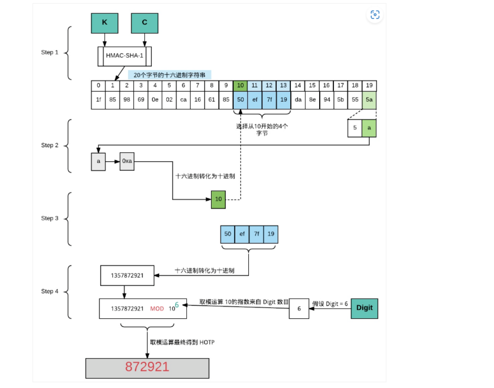

TOTP算法实现
最近发现github天天给我发通知要启用双因子认证（2FA），受不了了只能想办法启用了。看到它支持采用基于TOTP算法的应用的认证方式，便学习了一下TOTP算法，基于该原理简单做了一个实现，并成功启用了github的双因子认证。
1 什么是双因子认证（2FA）
双因子认证（2FA）是一种身份验证方法，要求用户提供密码和另一个认证因子或者至少提供两个认证因子（其中一个代替密码），从而提高用户账户的安全性。传统的密码仅为一组静态信息，很容易被窃取，而导致账户被盗用，相对来说，双因子认证比传统密码还多了一个认证步骤，并且一般来说认证因子会比传统密码更难破解、获取（具有时效性），引入双因子认证虽然带来了一定复杂度，但提高了安全性。
采用双因子认证的一个成功登录的流程：
2 TOTP原理
TOTP（英文全称：Time-Based One-Time Password Algorithm） 是基于时间的一次性密码算法。该算法是在HOTP算法的基础上改进而来，HOTP是一个基于事件的OTP算法，其中的移动因子是一个事件计数器，而TOTP的移动因子是时间值。基于时间的变体提供了短暂的OTP值，有助于增强安全性。
2.1 HOTP原理
HOTP是基于HMAC（采用加密哈希函数进行消息验证的机制）生成一次性密码值的算法。
算法核心参数
C：计数器（移动因子），是一个8-byte的值，需要在客户端与服务器之间同步K：密钥，在客户端与服务器之间共享，多个客户端之间的密钥应该保证不同且唯一T：节流参数，T次认证不成功之后服务器将会拒绝来自客户端的请求（本文实现未用到）s：再同步参数，服务器将尝试通过多个连续的计数器值验证接收到的身份验证器（本文实现未用到）Digit：HOTP值位数
算法定义
1 | |
其中，Trancate代表将HMAC-SHA-1值转换为HOTP值的函数。K、C以及数据值会首先被散列成高阶字节。而由HOTP生成器生成的HOTP值是按照大端模式进行表示的。
算法实现细节
生成HOTP值主要有三个不同的步骤：
HS=HMAC-SHA-1(K,C)，采用HMAC-SHA-1生成一个20-byte大小的字符串。- 截取
HS的值(采用DT函数截取20-byte中的字串，生成4-byte大小的字符串)，Sbits = DT(HS)。 - 基于第二步提供的字符串，转换为一个整数，并对
10^Digit进行取模，便能生成指定Digit位数的HOTP值了。
DT函数：1
2
3
4
5DT(String) // String = String[0]...String[19] 即20个字节长度的字符串（第一步由HMAC-SHA-1所生成的）
Let OffsetBits be the low-order 4 bits of String[19] // 最后一个字节的低4位取出来做为待截取字串的索引
Offset = StToNum(OffsetBits) // 0 <= OffSet <= 15 <= 2^4 = 16，表达范围，从0~15处索引且取4个字节，刚好能覆盖整个20字节长的字符串
Let P = String[OffSet]...String[OffSet+3] // 取其中四个字节
Return the Last 31 bits of P // 最高位被掩码去掉了是因为避免后续因求模运算所导致的有符号与无符号混淆
生成的HOTP值的最小位数为6，也可以是7或者8。 为了安全性着想，可以将其位数设置为7或者更多。
一个例子
假定生成的
HOTP值位数为6，例子所给的hmac_result是由HMAC-SHA-1生成的一个20-byte数组。
DT函数的核心实现：1
2
3
4
5int offset = hmac_result[19] & 0xf ; // 获取索引 0xf -> 1111
int bin_code = (hmac_result[offset] & 0x7f) << 24
| (hmac_result[offset+1] & 0xff) << 16
| (hmac_result[offset+2] & 0xff) << 8
| (hmac_result[offset+3] & 0xff) ; // 取四个字节 并转为 整数
假定hmac_result的内容如下：1
2
3
4
5
6
7
8
9-------------------------------------------------------------
| Byte Number |
-------------------------------------------------------------
|00|01|02|03|04|05|06|07|08|09|10|11|12|13|14|15|16|17|18|19|
-------------------------------------------------------------
| Byte Value |
-------------------------------------------------------------
|1f|86|98|69|0e|02|ca|16|61|85|50|ef|7f|19|da|8e|94|5b|55|5a|
-------------------------------***********----------------++|
- 最后一个字节，即
hmac_result[19]为0x5a,低4位就是a（偏移值），那么转为十进制就是 10 - 从偏移值(
offset= 10)开始取四个字节，即0x50ef7f19 - 由于最高的字节
0x50的二进制为0101 0000，经过0x7f掩码后，依然为0x50，故掩码处理最后依然是0x50ef7f19，其整数值为1357872921 - 对
1000000（6位，10^6）取模，最后得到的6位HOTP码为872921
用来自HOTP和TOTP算法图解文章的图来描述该流程：

2.2 TOTP
TOTP算法是HOTP算法基于时间的变体，其中T（从时间戳和步长中导出）将会代替公式中的C。同时，TOTP可以使用HMAC-SHA-256或者HMAC-SHA-512函数，而不再局限于HMAC-SHA-1。
算法要求
- 客户端与服务器必须能够获取当前的
Unix时间（自1970年1月1日午夜（UTC）以来经过的秒数） - 客户端与服务器必须共享同一个密钥或者生成共享秘密的秘密转换知识
- 算法必须采用
HOTP算法作为关键构建块 - 客户端和服务器必须使用同样的时间步长
X - 在每一个客户端中，密钥必须是唯一的
- 密钥应该使用密钥派生算法随机生成或派生
密钥可以存储在防篡改设备中，并且应该受到保护，防止未经授权的访问和使用。
上述提到的客户端和服务器，可以分别理解为一个生成
TOTP码的应用或者是程序，而服务器可以理解成校验器、验证器。
核心参数
X：时间步长（秒），默认是30T0：开始计算时间步长的Unix时间，默认是0
算法细节
1 | |
其中T=(current Unix Time - T0)/X, T是一个整数，该计算采用下限函数。
依然采用来自HOTP和TOTP算法图解文章的图来描述该流程：
该算法与HOTP算法剩余流程一致。
3 实现
笔者采用C++并结合Crypto++库进行实现，具体源代码详见ToTpAuth,代码量不多。其中部分实现细节，参考了python中的PyOTP库源码。
相对来说，采用
C++工作量相比Java、Python更多一些。如果不想实现，可以直接用PyOTP库来写个简单的脚本生成TOTP码即可。